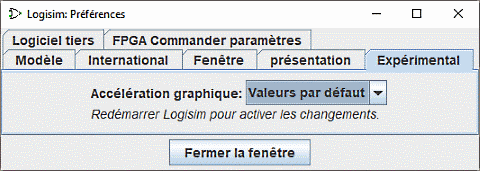

L'onglet Experimental

Ces préférences activent des fonctionnalités considérées comme expérimentales, insérées pour recueillir les commentaires des utilisateurs.
- Accélération graphique: Un utilisateur de Logisim a observé que l'ajout de -Dsun.java2d.d3d = True à la ligne de commande semblait améliorer les performances graphiques de Logisim. Cette liste déroulante tente de configurer Logisim pour configurer cette option. Des rapports indiquant si ce menu déroulant a un effet sur la performance seraient les bienvenus. Cela n'aura aucun effet avant le redémarrage de Logisim.
Suivant: Options de la ligne de commande.